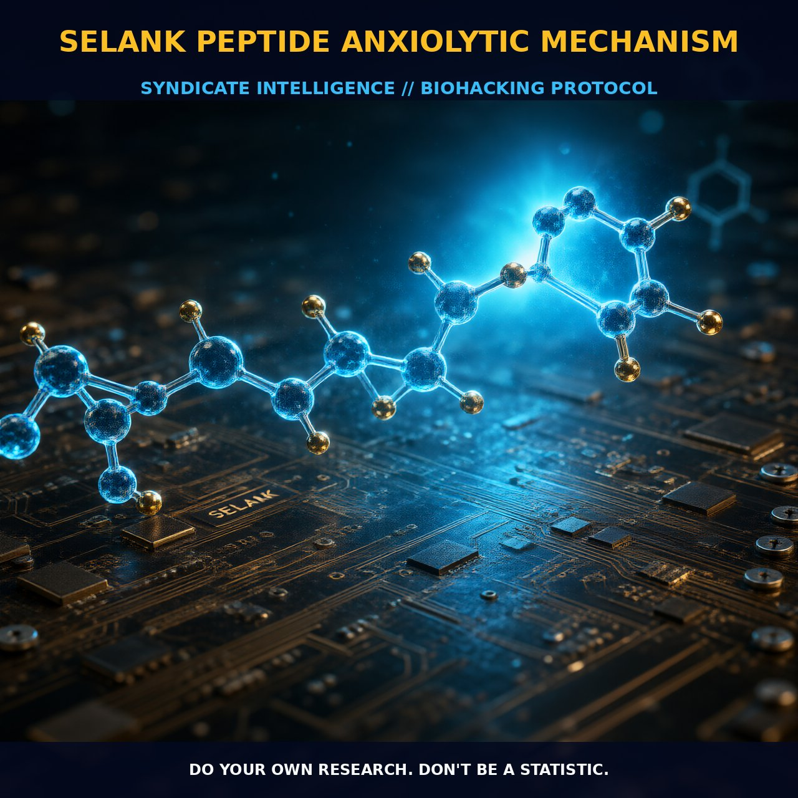

Mechanisms and Benefits of Selank Peptide

1. The Mechanism
Selank, a heptapeptide derived from tuftsin, has emerged as a promising anxiolytic agent with a range of beneficial effects. Its amino acid sequence, Thr-Lys-Pro-Arg-Pro-Gly-Pro, imparts unique pharmacological properties. Selank acts as a positive allosteric modulator of GABA receptors, enhancing their sensitivity to GABA and thereby potentiating inhibitory neurotransmission. This mechanism is similar to that of classical benzodiazepines but with a distinct profile that suggests synergistic effects when used in conjunction with these drugs. Additionally, Selank modulates [3H]GABA binding, indicating specific interactions with GABA receptor subtypes in a concentration-dependent manner. This modulation can potentially block the modulatory activity of other substances like diazepam and olanzapine, suggesting multiple pathways and receptor interactions.
Moreover, Selank demonstrates neuroprotective properties, particularly in relation to brain-derived neurotrophic factor (BDNF). By regulating BDNF levels in brain regions like the hippocampus and prefrontal cortex, Selank promotes cognitive-stimulating effects. It prevents the ethanol-induced increase in BDNF content, thereby mitigating memory and attention impairments associated with chronic alcohol intoxication. This suggests that Selank not only alleviates anxiety but also supports cognitive function by promoting neuroplasticity and neuronal health.
2. Biological Leverage
Selank's influence extends beyond its direct effects on GABA receptors, offering a multifaceted approach to anxiolytic and cognitive enhancement. By enhancing BDNF levels and modulating GABAergic transmission, Selank supports neural plasticity and resilience necessary for optimal cognitive function. The peptide's interaction with GABA receptors, particularly in the context of its allosteric modulation, suggests a potential for synergistic effects when used with other anxiolytics, providing a comprehensive anxiolytic profile.
Furthermore, the neurotrophic effects of Selank, particularly its ability to regulate BDNF levels, contribute to its nootropic potential. BDNF is critical for synaptic plasticity and neuronal survival, making it a key factor in maintaining cognitive health. By regulating BDNF content in critical brain regions, Selank not only alleviates anxiety but also supports the neural architecture necessary for memory formation and retention. This dual action on both the anxiolytic and cognitive domains positions Selank as a versatile tool for biohackers and nootropic enthusiasts.
The modulation of BDNF levels by Selank also implies a potential role in the treatment of age-related cognitive decline and neurodegenerative conditions. By supporting BDNF production, Selank can mitigate neuronal damage and cognitive impairments associated with aging and neurodegeneration, making it a promising candidate for cognitive enhancement and protection against age-related decline. Additionally, its role in attenuating the aversive signs of morphine withdrawal highlights its potential utility in managing withdrawal symptoms and supporting recovery from opiate dependence.
3. Tactical Implementation
In practical application, Selank is typically administered intraperitoneally in a dose of 0.3 mg/kg in rodent studies. This dose provides a balance between efficacy and safety, with significant anxiolytic effects observed without causing significant side effects. For human use, dosing may vary, and it is advisable to start with lower doses and gradually increase to assess individual tolerance and response. A typical human dose might range from 0.1 to 1 mg, administered once daily for optimal anxiolytic effects.
When stacking Selank with benzodiazepines such as diazepam, the combined use can enhance anxiolytic efficacy, particularly in conditions of chronic stress or withdrawal. For cognitive enhancement, Selank can be used in conjunction with other nootropics such as piracetam or noopept to support neuroplasticity and cognitive function. The synergistic effects of Selank with these compounds can amplify cognitive benefits, promoting a holistic approach to cognitive optimization. Additionally, Selank's neurotrophic properties can complement the use of other BDNF enhancers like Semax, further supporting cognitive health and resilience.
Prostar Life Hack
Start with a low dose of 0.1 mg of Selank once daily and gradually increase based on individual response. Combine with other nootropics like piracetam or noopept for enhanced cognitive benefits.
[ AUTHOR: LEAD TECHNICAL RESEARCHER ]